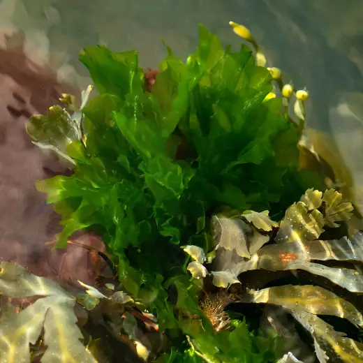

Main course · Popular in Western Norway
Fish soup with sea lettuce
Fish soup with sea lettuce is made with wild sea lettuce, blue mussels, a favourite in Western Norway.

How do you make fish soup with sea lettuce?
Bergen-style creamy fish soup with mussels and crumbled sea lettuce.
Wild ingredients
- Sea lettuce (Ulva lactuca): in season May to September
- Blue mussels (Mytilus edulis): in season January to December
Watch the recipe

Video: Klypa on YouTube